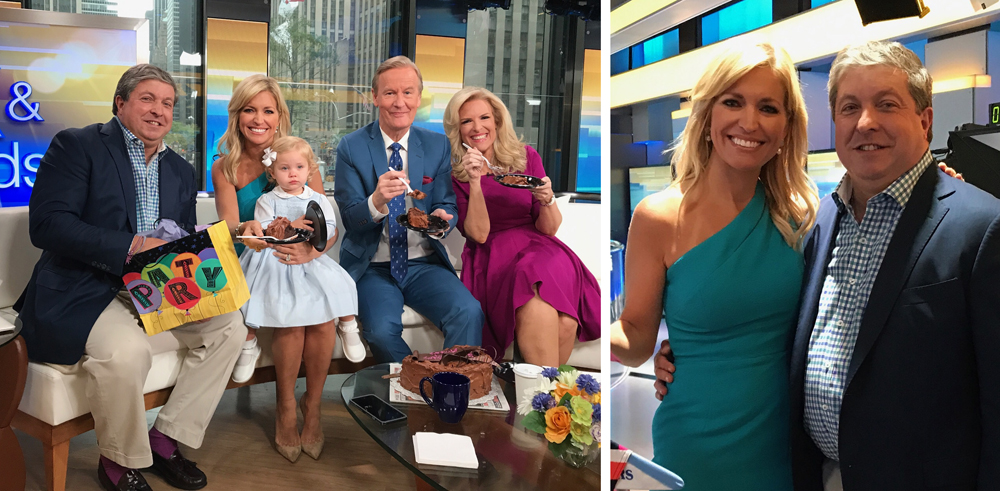

We are always delighted to share notes and comments from our guests in the media others about our restaurant. If you see something on the internet, web or in print about DiMaggio’s, feel free to share it with us.
 Watch Video from Fox and Friends
Port Washington’s favorite Italian trattoria since 1978, DiMaggio’s is an Old World gathering place where friends and family share home-made meals and stories. It feels cozy whether you are sitting in the elegant dining room with the large mural of a village scenes, or in the dining room that is designed like an old fashioned courtyard. The stone pizza oven, laid-back homey atmosphere, and traditional dishes such as pizza, chicken parmigiana or juicy veal chop add to the inviting atmosphere. In addition, the owners present a number of traditional dishes from the Bari region of Italy such as roasted rabbit or stuffed zucchini blossoms. There is a nice wine list to accompany the food, both from Old and New worlds.
|

|